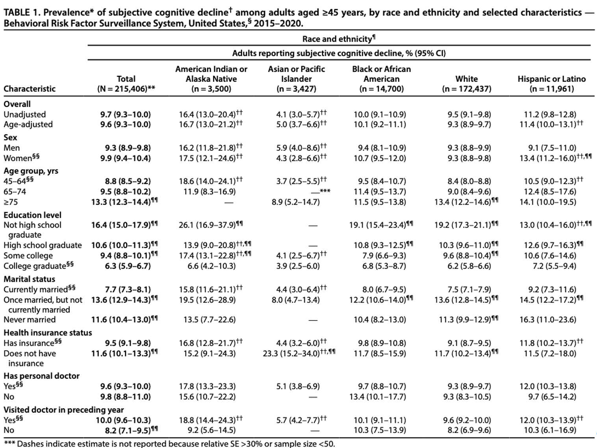

Miscellaneous Topics
in Survey Sampling
PUBHBIO 7225 Lecture 23
Topics
Data Suppression
Combining Survey Waves
Replicate Weights
Activities
Assignments
Additional Remaining Due Dates
Group Project slides due Tuesday 12/2 (week after Thanksgiving)
Individual Project due Tuesday 12/9 (last week of classes)
Group Project paper due Thursday 12/18 (last day of finals)
Surveys (based on probability samples) often have large sample sizes (relative to other study designs)
However, some point estimates may still be quite variable (imprecise/large variance)
Additionally, some estimates based on small numbers of people, or estimates for population groups that are small, might be dangerous in terms of privacy
Suppression = Purposefully withholding / not releasing a specific estimate (to the public)
Different statistical agencies use different rules about when to suppress results
Possible Reason 1: limit risk of disclosure – i.e., that you could figure out who answered the survey
Possible Reason 2: estimate is deemed “too variable” or “too unreliable”
Article: Racial and Ethnic Differences in Subjective Cognitive Decline — U.S., 2015–2020.1 (link)

= 45 years, by race and ethnicity and selected characteristics - Behavioral Risk Factor Surveillance System, United States, 2015-2020.’ The table presents data for the total population and breakdowns by race and ethnicity: American Indian or Alaska Native, Asian or Pacific Islander, Black or African American, White, and Hispanic or Latino. For each characteristic listed on the left—Overall, Unadjusted, Age-adjusted, Sex, Age group, Education level, Marital status, Health insurance status, and Has personal doctor—the table provides the percentage of adults reporting subjective cognitive decline and the corresponding 95% confidence interval for each racial/ethnic group.">Population Thresholds
Only release estimates for areas/population groups that exceed a certain size
Restrictions on Numerators and/or Denominators of Proportions
Based on the unweighted sample, suppress estimates with too few cases in the numerator or denominator of a proportion
Example: Suppress estimates based on proportions with numerator <10
(National Crime Victimization Survey, NCVS)
Example: Suppress estimates based on proportions with denominator <30
(National Survey of Family Growth, NSFG)
\[RSE = 100 \times \frac{\widehat{SE}(\bar{y})}{|\bar{y}|}\]
Usually a cutoff is chosen and estimates with RSE above this threshold are suppressed
Sometimes RSE is modified for proportions: \[\frac{\widehat{SE}(\hat{p})/\hat{p}}{-\mathrm{ln}(\hat{p})}>.175\] when \(\hat{p} \le\) 0.5
Many surveys are repeated (e.g., yearly, every 2 years) to monitor trends
Combining across survey waves can also be used to estimate characteristics from small subpopulations
Generally speaking, these are two different possible goals of combining survey waves:
Estimate a change in a mean/proportion and test the significance of the change
Estimate a mean/proportion using data from multiple years assuming that the mean/proportion has not changed over time
Assuming that a new (cross-sectional) sample is taken each wave (i.e., not a panel/longitudinal survey), samples from wave to wave are independent
Thus combining across waves is straightfoward (it is what was done to produce this table)
| Year | True Population Value | Estimate | Variance of Estimate |
|---|---|---|---|
| 1 | \(\theta_1\) | \(\hat{\theta}_1\) | \(V(\hat{\theta}_1)\) |
| 2 | \(\theta_2\) | \(\hat{\theta}_2\) | \(V(\hat{\theta}_2)\) |
| Change | \(\Delta = \theta_2-\theta_1\) | \(\hat{\Delta}=\hat{\theta}_2-\hat{\theta}_1\) | \(V(\hat{\Delta}) = V(\hat{\theta}_1) + V(\hat{\theta}_2)\) |
Since \(\hat{\theta}_1\) and \(\hat{\theta}_2\) are independent!
Calculate estimates in each year/wave, subtract to estimate the change, add the (estimated) variances to obtain the variance of the change, and test for change…
…or you can pool the data from the waves and let software do the analysis for you!
Is the design the same in each year? E.g., strata, clustering, etc.
For many large surveys the answer will be yes – precisely because they want to facilitate trend analyses
If differences in strata definitions, may have to redefine to align correctly (e.g., “stratum 1”, “stratum 2” for all waves)
The sample weights – rescale or not rescaled?
Estimating changes in means/proportions – does not matter whether you rescale weights or not, estimates identical
Pooled estimates (e.g., average prevalence in 2017-2020) – rescale weights so sum is the average population size by dividing by number of waves being combined
Combining NSCH Waves (Years)
In this class we have considered two possible methods for getting a variance estimate for point estimates:
Exact variance formula (specific to survey design and what you’re estimating)
Linearization (uses the exact variance formulas)
Potential difficulties with these approaches:
Linearization can only be used for smooth statistics – means, but not medians
Linearization requires large sample size (not usually a problem for surveys)
Linearization requires you to have a formula for means/totals under the specific design, which often leads to approximations such as ultimate PSU analysis – ignoring second stage sampling
Linearization requires you to derive a unique formula for each statistic (maybe not so problematic in the world of computing)
Alternative variance estimation methods use resampling – mimic taking lots of samples, using your one sample
Three main approaches used:
Balanced Repeated Replication (BRR)
Jackknife (lots of variations)
Bootstrap (also quite a few variations)
Formally, resampling methods re-create the sample for each replicate
A teeny bit of math to illustrate how resampling methods work:
Population quantity we want to estimate: \(\theta\) (e.g., a mean of \(y\) for a finite population)
Point estimate: \(\hat{\theta}\)
Via one of the resampling methods, we create \(R\) resampled datasets
Variance estimate from resampling method: \(\displaystyle \widehat{V}(\hat{\theta}) = \frac{A}{R}\sum_{r=1}^R \left(\hat{\theta}^{(r)} - \hat\theta \right)^2\)
where \(A\) is a scaling constant, depends on the resampling method
We don’t actually have to create lots of datasets though…
We can accomplish this via manipulation of the sampling weights!
For all of these methods, replicate weights are created that capture the variability and allow end users to calculate standard errors without knowing design information, thus reducing disclosure risk
Pros:
Can suppress design information (e.g., strata, PSUs)
BRR and Bootstrap work for any estimate (including non-smooth statistics)
Cons:
Computationally intensive
Post-survey adjustments (e.g., nonresponse weighting adjustments, poststratification) must be done for all sets of weights
BRR requires a very specific design: 2 PSUs per stratum
For publicly available datasets, agencies decide to either:
Release design information (so you can use linearization)
Release masked (“pseudo”) design information (so you can use linearization)
Release no design information and give you replicate weights
PUBHBIO 7225